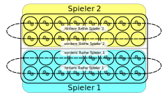

Das HUS-Spiel ist typischerweise namibischen Ursprungs. Es ist auch in Nachbarländern Namibias traditionell weit verbreitet in ethnischen Gruppen der Nama, Herero, auch Kwangari. Es wird zur Gruppe der Mancala-Spiele gezählt. Oft findet man auch die Schreibweise !HUS oder ähnlich. Dabei soll das zusätzliche Zeichen am Anfang einen in südafrikanischen Khoisansprachen gesprochenen Klicklaut repräsentieren.
Das Spielbrett hat 4 Reihen mit je acht Mulden. Je nach Ausführung des Spielbretts können noch weitere zwei (meist größere) Mulden existieren. Das Spielbrett wird quer zwischen die beiden Mitspieler gelegt.
Es werden zusätzlich noch 48 Spielsteine ( Kete , oft Samenkörner der Caesalpina Bonduc oder auch Halbedelsteine oder vergleichbare Spielsteine ) benötigt.
In den hinteren den jeweils Spielern zugewandten Reihen befinden sich anfangs in jeder Mulde 2 Spielsteine. In der jeweils vorderen oder inneren Reihe jedes Spielers befinden sich nur in den rechten vier Mulden jeweils 2 Spielsteine.

Jeder Spieler kontrolliert die beiden ihm zugewandten Reihen von Mulden. Gespielt wird abwechselnd. Es besteht Zugzwang. Ein Passen ist nicht erlaubt.
Innerhalb eines Spielzugs entnimmt der Spieler alle Spielsteine aus einer beliebigen seiner Mulden, die mehr als einen Spielstein enthält, und verteilt diese einzeln im Uhrzeigersinn auf die eigenen darauf folgenden Mulden. Bei zwölf Spielsteinen oder mehr werden diese in weiteren Runden inklusive der geleerten Mulde weiter verteilt. Wird der letzte Spielstein in eine gefüllte Mulde gelegt, so werden alle darin enthaltenen Spielsteine inklusive des gerade gelegten Steines aufgenommen und weiter verteilt. Zusätzlich kann es jedes Mal beim Legen des letzten Spielsteins vorkommen, dass man auch Steine des Mitspielers aus seinen Reihen aufnimmt: Fällt dieser letzte Stein in die eigene vordere Reihe und enthält diese Mulde mindestens einen Spielstein, so werden alle in genau dieser gegenüberliegenden Mulde des Mitspielers in der vorderen Reihe des Mitspielers enthaltene Steine mit aufgenommen und ebenfalls weiter verteilt. Falls man aus der gegenüberliegenden Mulde der vorderen Reihe des Mitspielers Steine entnimmt, so werden auch aus seiner hinteren Reihe alle Spielsteine der genau gegenüberliegenden Mulde entnommen. Dies gilt jedoch nur, falls auch aus seiner Mulde der vorderen Reihe Spielsteine genommen werden.
Man gewinnt, sobald entweder die vordere Reihe des Mitspielers komplett leer ist oder dem Mitspieler keine Zugmöglichkeiten mehr verbleiben (er keine Mulde mit mehr als einem Spielstein mehr übrig hat).
Es bleibt vor Spielbeginn abzustimmen, welche Regelvarianten gelten. Einige der folgenden Regelvarianten schließen sich gegenseitig aus.